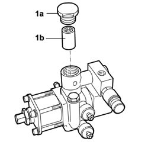

1044E12 gas pressure control valve on gas circuit - replace
- Path
- Procedures > 10 ENGINE > 1044 FUEL CIRCUIT PUMP/AND DEVICES > 1044E gas pressure control device > 1044E12 gas pressure control valve on gas circuit - replace
- Kind
- repair procedure (removal / refitting; the operation number is the code)
- Applies to
- all engines; all production periods; only with equipment: BIPOWER
- Interactive page
- https://sloeber94.github.io/elrnDB-fDbl/en/#/2584542
Applies to: all engines; all production periods; only with equipment: BIPOWER
 Removing
Removing
 Refitting
RefittingPosition the vehicle on a lift.
Drain the high and low pressure circuit as described in the specific operation 1042A02 C.N.G. - FUEL SYSTEM Safety check .
1044E10 cng injection system pressure reduction unit - r r
Undo the protective cap (1a) and remove the filter (1b) from the housing.

Applies to: all engines; all production periods; only with equipment: BIPOWER
Refitting
RemovingReplace the filter and fit it in the special housing on the reduction unit.
Tighten the protective cap after having replaced the seal for the cap.
1044E10 cng injection system pressure reduction unit - r r
Manually set the CNG cut-out solenoids to the open position and check that the system is operating.
Remove the vehicle from the lift.
1042A06 C.N.G. - FUEL SYSTEM check for any leaks using electronic detector following operations .